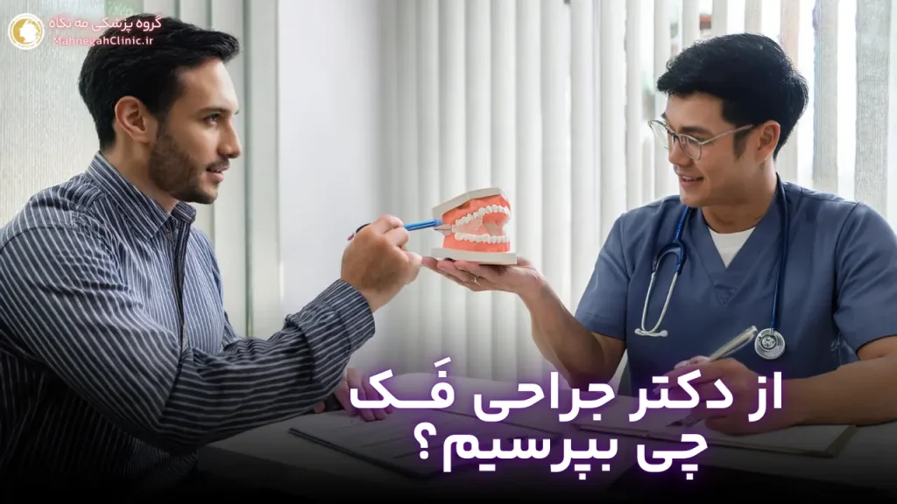

خانه / مجله / زاویه سازی فک
دکتر زاویه سازی فک: سوالات کلیدی برای انتخاب بهترین متخصص
1. اهمیت پرسیدن سوالات درست از دکتر زاویه سازی فک
انتخاب دکتر زاویه سازی فک مناسب، تصمیمی حیاتی است که میتواند تأثیر بسزایی در نتایج جراحی و رضایت شما داشته باشد. پرسیدن سوالات درست در جلسه مشاوره، به شما کمک میکند تا با پزشک و روشهای درمانی آشنا شوید، انتظارات خود را مشخص کنید و در نهایت، تصمیمی آگاهانه بگیرید.
چرا باید قبل از زاویه سازی فک سوال بپرسیم؟
- کسب اطلاعات کامل: جراحی زاویه فک یک پروسه پیچیده است و شما باید از تمام جوانب آن آگاه باشید. سوال پرسیدن از پزشک به شما کمک میکند تا اطلاعات لازم در مورد روشهای مختلف، مزایا، معایب، خطرات و مراقبتهای پس از جراحی را کسب کنید.
- رفع نگرانیها و ابهامات: ممکن است در مورد جراحی زاویه فک نگرانیها یا ابهاماتی داشته باشید. پرسیدن سوالات به شما کمک میکند تا این نگرانیها را برطرف کنید و با اطمینان بیشتری به جراحی بپردازید.
- ارزیابی تخصص و تجربه پزشک: سوالات شما به شما کمک میکنند تا تخصص، تجربه و مهارت پزشک را ارزیابی کنید و مطمئن شوید که او بهترین گزینه برای شماست.
- ایجاد ارتباط موثر با پزشک: پرسیدن سوالات و بیان انتظارات خود، به ایجاد یک ارتباط موثر با پزشک کمک میکند و باعث میشود او درک بهتری از نیازها و اهداف شما داشته باشد.
نقش سوالات در تصمیمگیری آگاهانه
- انتخاب روش مناسب: با پرسیدن سوالات در مورد روشهای مختلف زاویه سازی فک (مانند تزریق ژل زاویه فک یا جراحی زاویه فک)، میتوانید بهترین روش را برای خود انتخاب کنید.
- انتظارات واقعبینانه: سوالات شما به پزشک کمک میکنند تا انتظارات شما را درک کند و به شما بگوید که آیا این انتظارات واقعبینانه هستند یا خیر.
- کاهش استرس و اضطراب: پرسیدن سوالات و کسب اطلاعات بیشتر در مورد جراحی، میتواند به کاهش استرس و اضطراب شما کمک کند و شما را برای تجربه جراحی آمادهتر کند.
- اطمینان از انتخاب بهترین دکتر: با پرسیدن سوالات درست، میتوانید تخصص، تجربه و مهارت پزشک را ارزیابی کنید و مطمئن شوید که او بهترین گزینه برای شماست.
در نتیجه، پرسیدن سوالات درست ازدکتر زاویه سازی فک**، یک گام اساسی در تصمیمگیری آگاهانه و انتخاب بهترین متخصص برای خودتان است. با پرسیدن سوالات مناسب، میتوانید اطلاعات لازم را کسب کنید، نگرانیهای خود را برطرف کنید و با اعتماد به نفس بیشتری به جراحی بپردازید.**
2. سوالات مربوط به تخصص و تجربه دکتر زاویه فک
تخصص و تجربه پزشک، از مهمترین عواملی هستند که باید در انتخاب دکتر زاویه سازی فک در نظر بگیرید. یک جراح با تجربه و متخصص، میتواند جراحی را با دقت و مهارت بیشتری انجام دهد و نتایج بهتری را برای شما به ارمغان آورد. در ادامه، به برخی از سوالات کلیدی که میتوانید در این زمینه از پزشک بپرسید، اشاره میکنیم:
مدارک تحصیلی و گواهینامههای تخصصی
- آیا شما دارای تخصص و گواهینامه معتبر در جراحی پلاستیک صورت و فک هستید؟ اطمینان حاصل کنید که پزشک شما دارای بورد تخصصی جراحی پلاستیک صورت و فک است و دورههای آموزشی لازم را در این زمینه گذرانده است.
- آیا شما عضو انجمنها یا سازمانهای حرفهای مرتبط با جراحی پلاستیک صورت هستید؟ عضویت در انجمنهای معتبر نشاندهندهی تعهد پزشک به بهروز نگه داشتن دانش و مهارتهای خود و رعایت استانداردهای اخلاقی و حرفهای است.
- آیا شما دورههای آموزشی خاصی در زمینه زاویه سازی فک گذراندهاید؟ برخی پزشکان ممکن است دورههای آموزشی تکمیلی یا تخصصی در زمینه زاویه سازی فک و صورت گذرانده باشند که میتواند نشاندهندهی علاقه و تخصص بیشتر آنها در این زمینه باشد.
تعداد عملهای زاویه سازی فک انجام شده
- چند سال تجربه در انجام جراحیهای زاویه فک دارید؟ تجربه عملی جراح در انجام این نوع جراحیها بسیار مهم است. یک جراح با تجربه، با چالشها و پیچیدگیهای این جراحی آشناست و میتواند بهترین نتایج را برای شما به ارمغان آورد.
- به طور متوسط، چند عمل زاویه سازی فک در سال انجام میدهید؟ تعداد جراحیهای انجام شده توسط پزشک، یکی از شاخصهای مهم تجربه اوست.
- آیا میتوانید نمونه کارهای خود را در زمینه جراحی زاویه فک به من نشان دهید؟ مشاهده نمونه کارهای قبل و بعد از جراحی، به شما کمک میکند تا با سبک و مهارت جراح آشنا شوید و ببینید آیا نتایج کار او با انتظارات شما همخوانی دارد یا خیر.
- آیا میتوانید مرا با برخی از بیماران قبلی خود که جراحی زاویه فک انجام دادهاند، ارتباط دهید؟ صحبت با بیماران قبلی میتواند به شما دیدگاه واقعیتری نسبت به تجربه جراحی و نتایج آن بدهد.
پرسیدن این سوالات به شما کمک میکند تا تخصص و تجربه پزشک را ارزیابی کنید و با اطمینان بیشتری بهترین دکتر را برایزاویه سازی صورت** خود انتخاب کنید.**

3. سوالات مربوط به روشهای زاویه سازی فک
هر پزشک ممکن است رویکرد و ترجیحات متفاوتی در مورد روشهای زاویه سازی فک داشته باشد. پرسیدن سوالات در این زمینه به شما کمک میکند تا با دیدگاه پزشک آشنا شوید و بهترین روش را برای خود انتخاب کنید.
زاویه سازی فک با تزریق ژل یا جراحی؟
- کدام روش را برای من پیشنهاد میکنید؟ زاویه سازی فک با تزریق ژل یا جراحی؟ چرا؟
- آیا شرایط من برای هر دو روش مناسب است؟
- مزایا و معایب هر روش برای من چیست؟
- کدام روش نتایج ماندگارتر و طبیعیتری برای من خواهد داشت؟
- آیا میتوانم هر دو روش را ترکیب کنم؟
- آیا میتوانم پس از تزریق ژل زاویه فک، در صورت عدم رضایت، جراحی انجام دهم؟
مزایا و معایب هر روش برای شما
- دوره نقاهت هر روش چقدر است و چه محدودیتهایی در این دوره خواهم داشت؟
- آیا پس از عمل جای زخم یا اسکار باقی میماند؟ اگر بله، در کدام نواحی و تا چه حد قابل مشاهده خواهد بود؟
- آیا نیاز به تکرار درمان وجود دارد؟ اگر بله، در چه فواصل زمانی؟
- چه نوع فیلر یا ایمپلنت را برای من پیشنهاد میکنید و چرا؟
- آیا میتوانم نمونه کارهای شما را از هر دو روش ببینم؟
با پرسیدن این سوالات، میتوانید درک بهتری از روشهای مختلف زاویه سازی فک و مناسبترین گزینه برای خودتان پیدا کنید. همچنین، میتوانید انتظارات واقعبینانهتری از نتایج هر روش داشته باشید و با آگاهی کامل تصمیم بگیرید.
4. سوالات مربوط به مراقبتهای قبل و بعد از عمل زاویه سازی صورت
آمادگی قبل از عمل و مراقبتهای پس از آن، نقش مهمی در موفقیت جراحی زاویه سازی صورت و دستیابی به نتایج مطلوب دارند. پرسیدن سوالات دقیق در این زمینه به شما کمک میکند تا برای جراحی آماده شوید و روند بهبودی را به بهترین شکل طی کنید.
آمادگیهای لازم قبل از عمل
- چه آزمایشات و تصویربرداریهایی قبل از عمل لازم است؟
- آیا نیاز به قطع مصرف داروها یا مکملهای خاصی دارم؟
- آیا باید رژیم غذایی خاصی را قبل از عمل رعایت کنم؟
- آیا باید سیگار و الکل را ترک کنم؟ اگر بله، از چه مدت قبل از عمل؟
- چه اقداماتی را باید در روز قبل از عمل انجام دهم؟
- آیا نیاز به همراه داشتن وسایل خاصی در روز عمل دارم؟
مراقبتهای پس از عمل و دوره نقاهت
- دوره نقاهت چقدر طول میکشد و چه محدودیتهایی در این دوره خواهم داشت؟
- چه داروهایی را باید پس از عمل مصرف کنم؟
- آیا نیاز به پانسمان یا بانداژ خاصی دارم؟
- چه زمانی میتوانم به فعالیتهای روزمره خود بازگردم؟
- چه زمانی میتوانم ورزش کنم؟
- آیا نیاز به مراجعه منظم برای پیگیری و معاینه دارم؟
- در صورت بروز عوارض جانبی مانند درد، تورم یا کبودی، چه باید بکنم؟
با پرسیدن این سوالات، میتوانید از آمادگی کامل برای جراحی زاویه سازی صورت اطمینان حاصل کنید و روند بهبودی خود را به بهترین شکل مدیریت کنید. همچنین، میتوانید نگرانیهای خود را در مورد مراقبتهای پس از عمل برطرف کنید و با آرامش بیشتری به جراحی بپردازید.
5. سوالات مربوط به هزینه و بیمه
هزینه جراحی زاویه سازی فک یکی از مهمترین مسائلی است که باید قبل از تصمیمگیری نهایی در مورد آن در نظر بگیرید. همچنین، ممکن است بخواهید بدانید که آیا بیمه هزینههای این جراحی را پوشش میدهد یا خیر. در ادامه، به برخی از سوالات کلیدی که میتوانید در این زمینه از پزشک بپرسید، اشاره میکنیم.
هزینههای مربوط به عمل زاویه سازی فک
- هزینه کل جراحی چقدر است؟ این شامل هزینههای جراح، بیمارستان، بیهوشی، داروها و سایر هزینههای مرتبط میشود.
- آیا هزینهها شامل مراقبتهای پس از جراحی نیز میشود؟ برخی پزشکان ممکن است هزینههای ویزیتهای بعدی و مراقبتهای پس از جراحی را به صورت جداگانه دریافت کنند.
- آیا امکان پرداخت اقساطی وجود دارد؟ برخی کلینیکها ممکن است امکان پرداخت اقساطی را برای بیماران فراهم کنند. در مورد این گزینه با پزشک خود صحبت کنید.
- آیا هزینهها قابل تغییر هستند؟ ممکن است هزینه نهایی جراحی بسته به پیچیدگی عمل، مدت زمان جراحی یا سایر عوامل تغییر کند. از پزشک خود بخواهید تا یک برآورد دقیق از هزینهها را به شما ارائه دهد.
پوشش بیمه و امکانات پرداخت اقساطی
- آیا بیمه هزینههای این جراحی را پوشش میدهد؟ در بیشتر موارد، جراحیهای زیبایی مانند زاویه سازی فک تحت پوشش بیمه قرار نمیگیرند، مگر اینکه دلیل پزشکی خاصی برای انجام آن وجود داشته باشد. با این حال، بهتر است با شرکت بیمه خود تماس بگیرید و شرایط پوشش را بررسی کنید.
- آیا کلینیک شما با شرکتهای بیمه خاصی قرارداد دارد؟ برخی کلینیکها ممکن است با شرکتهای بیمه خاصی قرارداد داشته باشند که میتواند به کاهش هزینهها برای شما کمک کند.
- آیا امکان پرداخت اقساطی وجود دارد؟ اگر هزینه جراحی برای شما بالا است، میتوانید در مورد امکان پرداخت اقساطی با کلینیک صحبت کنید.
پرسیدن این سوالات به شما کمک میکند تا درک بهتری از هزینههای جراحی زاویه فک داشته باشید و بتوانید برای تأمین مالی آن برنامهریزی کنید. همچنین، میتوانید در مورد گزینههای پرداخت اقساطی و پوشش بیمه با پزشک خود صحبت کنید.
6. سوالات مربوط به نتایج و انتظارات
یکی از مهمترین جنبههای جراحی زاویه فک، درک واقعبینانه از نتایج و انتظارات پس از عمل است. پرسیدن سوالات مناسب در این زمینه به شما کمک میکند تا تصویری روشنتر از آنچه که میتوانید انتظار داشته باشید، به دست آورید و از نتایج جراحی خود راضی باشید.
ماندگاری نتایج زاویه سازی فک
- نتایج این جراحی چقدر ماندگار هستند؟
- آیا عوامل خاصی میتوانند بر ماندگاری نتایج تأثیر بگذارند؟ (مانند افزایش سن، کاهش وزن یا بارداری)
- آیا نیاز به جراحی ترمیمی یا تکرار عمل در آینده وجود دارد؟
- چه مراقبتهایی را باید پس از جراحی انجام دهم تا نتایج آن را حفظ کنم؟
امکان دستیابی به فک زاویه دار طبیعی
- آیا نتایج جراحی طبیعی به نظر خواهند رسید؟
- آیا فک من بیش از حد برجسته یا مصنوعی نخواهد شد؟
- آیا جراحی میتواند به بهبود تقارن صورت من کمک کند؟
- آیا میتوانم نمونه کارهای قبل و بعد از جراحی را ببینم تا نتایج واقعی را ارزیابی کنم؟
- آیا میتوانید تصویری از نتایج احتمالی جراحی بر روی صورت من ایجاد کنید؟ (با استفاده از نرمافزارهای شبیهسازی)
پرسیدن این سوالات به شما کمک میکند تا انتظارات واقعبینانهای از نتایج جراحی داشته باشید و از انتخاب خود پشیمان نشوید. همچنین، میتوانید با پزشک خود در مورد نگرانیهای خود در مورد ظاهر فک پس از جراحی صحبت کنید و اطمینان حاصل کنید که نتایج با سلیقه و اهداف زیبایی شما همخوانی دارند.
7. سوالات مربوط به عوارض و خطرات احتمالی
هر جراحی، حتی جراحیهای زیبایی، با خطرات و عوارض جانبی احتمالی همراه است. پرسیدن سوالات دقیق در مورد عوارض و خطرات احتمالی جراحی زاویه فک، به شما کمک میکند تا با آگاهی کامل تصمیم بگیرید و در صورت بروز هرگونه مشکل، آمادگی لازم را داشته باشید.
عوارض جانبی شایع و نادر
- عوارض جانبی شایع:
- درد، تورم و کبودی در ناحیه فک و صورت
- بیحسی موقت در لب پایین، چانه و دندانها
- خونریزی خفیف از محل برشها
- مشکل در جویدن یا صحبت کردن برای چند روز پس از جراحی
- عوارض جانبی نادر:
- عفونت
- آسیب به اعصاب صورت
- مشکلات تنفسی
- عدم تقارن در فک
- نیاز به جراحی ترمیمی
اقدامات پزشک در صورت بروز عوارض
- در صورت بروز هرگونه عارضه جانبی، چه شایع و چه نادر، فوراً با پزشک خود تماس بگیرید.
- از پزشک بپرسید که در صورت بروز عوارض، چه اقداماتی را باید انجام دهید و چه زمانی باید به او مراجعه کنید.
- در مورد علائم هشدار دهندهای که باید به آنها توجه کنید، از پزشک خود سوال کنید.
- اطمینان حاصل کنید که پزشک شما یک برنامه کامل برای مدیریت عوارض احتمالی دارد و در صورت نیاز، شما را به متخصصان دیگر ارجاع میدهد.
پرسیدن این سوالات به شما کمک میکند تا درک بهتری از خطرات و عوارض احتمالی جراحی زاویه فک داشته باشید و بتوانید در صورت بروز هرگونه مشکل، به موقع اقدام کنید و از عواقب جدی جلوگیری کنید.
8. سایر سوالات مهم برای انتخاب بهترین دکتر زاویه فک در تهران
علاوه بر سوالات مربوط به تخصص، تجربه، روشهای درمانی، مراقبتها، هزینهها و عوارض، برخی سوالات دیگر نیز وجود دارند که میتوانند به شما در انتخاب بهترین دکتر زاویه سازی فک در تهران کمک کنند. این سوالات به شما کمک میکنند تا با دیدگاه پزشک، رویکرد او به جراحی و تعامل او با بیماران آشنا شوید و در نهایت، تصمیمی آگاهانه و مطمئن بگیرید.
امکان مشاهده نمونه کارهای قبل و بعد
- آیا میتوانم نمونه کارهای قبل و بعد از جراحی زاویه فک شما را ببینم؟
- آیا میتوانید مرا با برخی از بیماران قبلی خود که جراحی مشابهی انجام دادهاند، ارتباط دهید تا بتوانم از تجربیات آنها استفاده کنم؟
- آیا از تکنولوژیهای تصویربرداری سهبعدی برای شبیهسازی نتایج جراحی استفاده میکنید؟
ارتباط و تعامل پزشک با بیمار
- آیا در طول روند جراحی و بهبودی، به سوالات و نگرانیهای من پاسخ خواهید داد؟
- آیا میتوانم در هر زمانی با شما یا کادر درمانی شما تماس بگیرم؟
- آیا پس از جراحی، ویزیتهای پیگیری منظمی را برای من برنامهریزی خواهید کرد؟
- آیا در صورت بروز هرگونه عارضه یا مشکل، به من کمک خواهید کرد؟
- آیا احساس راحتی و اعتماد میکنم که شما جراحی زاویه فک من را انجام دهید؟
سایر سوالات:
- در چه بیمارستانی جراحی را انجام میدهید؟
- چه نوع بیهوشی برای جراحی من استفاده خواهد شد؟
- آیا تیم بیهوشی شما متخصص و با تجربه است؟
- چه اقداماتی را برای اطمینان از ایمنی جراحی انجام میدهید؟
- آیا میتوانید توصیههای خاصی در مورد مراقبتهای پس از جراحی به من ارائه دهید؟
با پرسیدن این سوالات و ارزیابی پاسخهای پزشک، میتوانید بهترین دکتر زاویه سازی فک در تهران را برای خود انتخاب کنید و با اطمینان به او، به زیبایی و اعتماد به نفس بیشتری دست یابید. به یاد داشته باشید که انتخاب پزشک مناسب، یک تصمیم شخصی و مهم است و شما باید با توجه به نیازها، ترجیحات و شرایط خود، بهترین گزینه را انتخاب کنید.
سوالات متداول در مورد زاویه سازی فک با نخ
خیر، این روش تحت بیحسی موضعی انجام میشود و درد قابل توجهی ندارد.
نتایج معمولاً بین 1 تا 2 سال ماندگاری دارند و سپس نیاز به تکرار درمان وجود دارد.
خیر، این روش برای افرادی با افتادگی خفیف تا متوسط پوست و بدون مشکلات خاص پزشکی مناسب است.
عوارض جانبی معمولاً خفیف و موقتی هستند و شامل تورم، کبودی و حساسیت میشوند.
بله، پس از بهبودی کامل میتوانید ورزشهای صورت را ادامه دهید یا شروع کنید.